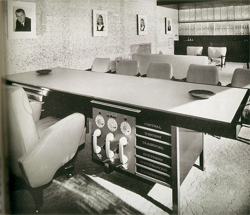
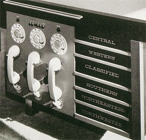
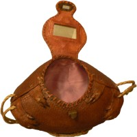

21st
March
2007
According to Scary Ideas, these coasters were placed in popular bars throughout Mumbai by the Mumbai Traffic Police, as a reminder of the dangers of driving drunk.

Bloody coasters from Mumbai
The coasters were printed using a special red dye that only appears when the coaster gets wet — so when a drink’s condensation runs down the glass to the coaster, it creates a ring of blood. Yowzers!
This is a pretty good, if unsettling, use — I wonder if we’ll see this special dye used again in a more jovial form at Halloween. [via BoingBoing]
posted in Design, Tech |
20th
March
2007
Hanford just picked up this little plastic puppy:

My new puppy

So very wee!
It’s really little — you can see me holding it in my fingers here — and I’ve got teeny fingers. He found it in one of those coin-operated kiddie machines, and got it for two quarters. This thing is just insanely detailed. I’ve got it blown way up in that picture above so you can see all the little features. The eyes and nose are painted on, and they’re just perfect. The fur, the mouth, the ears — every detail is meticulously defined. Fifty cents goes a long way in the puppy-crafting trade, apparently.
posted in Design |
20th
March
2007
posted in Design, Tech |
16th
March
2007
I love midcentury futurism names. I dig on the Cinerama, and I can’t get enough juice from the Juice-o-matic. I named my game studio Monolux, I named my feedback system the Suggestomatic, and I named my game’s serial number generator the Tabulatron. Not only love those names, but I love the logos, styles, and aesthetics they conjure up. So naturally I became giddytronic when I saw Thrift Store Adventure’s photo collection of midcentury names and logos! There’s the Filmosonic, the Delineascope, the Selectron Semimatic, and WTF the Superheterodyne!!!! Check them out now!
posted in Design, Midcentury, Space Age |
14th
March
2007
I found an Architectural Digest from 1959 a while back in an antique mall, and naturally it has some fantastic images of midcentury design. This one is quite possibly my favorite: the office of Mr. McCulloch, the head honcho at McCulloch Corporation.

Mr. McCulloch’s Private Office, from a 1959 Architectural Digest

The nerve center
The space was designed for McCulloch by the famed modern designer Paul Laszlo, and it’s really quite beautiful. I can’t tell from the pictures what the details are on the wall, but there was some sort of tiled design that must have been stunning.
But the real star of the photo is clearly this desk. It’s just out of this world! Check out those three clunky handsets, each with its own hidey-hole for the cord (I’m sure the cords were tangled in a heap on the floor in no time) and awkwardly placed rotary dial. And the drawers! Someone most likely hand-painted these labels on each one, in that beautiful lettering. The desk is so stuffy and proud to be corporate — we’re across the nation now, you know! We’ve got regions! And that CLASSIFIED drawer, trying to look nonchalant between WESTERN and SOUTHERN.
I also love the giant, menacing portraits on the wall… they look more like somber, elfin, former McCulloch presidents than the president’s children.
posted in Design, Midcentury |
13th
March
2007
100 years of Kellogg’s breakfast advertising all wrapped up in a tasty Flash coating. This should be better than it actually is, but there’s a few gems in there. You can save images if you use the “enlarge image” button first.
[Via The Waffle Whiffer Zone]
posted in Design, Food, Midcentury |
13th
March
2007
The Monsanto House of the Future was part of Disneyland’s Tomorrowland from 1957 until 1967, and was a showcase of what plastics could do. The house was made of eight pre-fabricated plastic pieces; the building was so strong that when the time came for it to be demolished, the wrecking ball bounced right off.

Disneyland’s Monsanto House of the Future, from
Daveland
The House of the Future under construction
The Daveland blog has some great pictures from the Goody Clancy architecture firm of the house as it was being constructed. I love the above picture of the completed home — largely because it captures the pastoral feel of the landscaping, which is in such sharp contrast to the modern-as-modern-can-be home. I also love this picture to the left — this time, it’s the contrast of the traditional Sleeping Beauty’s castle in the background against the upstart little plastic building.
The Daveland blog has more pictures, be sure to check them out: Part 1 and Part 2 [via Stuff from the Park]
posted in Design, Disney, Midcentury, Space Age |
12th
March
2007
I love old-timey characters like the dog in this advertising image below; it’s got a strange quality in its eyes unlike modern cartoons. The label on the can is a bonus. If I could still get this, I would eat it every day.
[Flickr, via A Sampler of Things]
posted in Art, Design |
12th
March
2007
I’ve kind of got a thing for armadillos. I’ve never seen one in person — a live one, at least… I saw a squished one at the side of the road once when I was in Texas for a business trip. I can rattle off random armadillo facts for you (They’re born as litters of identical quadruplets! The only one that can roll up into a perfect ball is the three-banded armadillo! The pink fairy armadillo is only four inches long! They carry leprosy!), but I think you’ll be much more interested in this:

My armadillo purse

Lined with pink satin!
Your eyes do not deceive you: this is a purse, made of an actual, real armadillo. It’s been bent around into a sort of football shape, clutching itself with its sweet little claws, and with rhinestones for eyes. It’s lined in pink satin, and has a mirror under its neck so you can check your lipstick. It is fancy.
I got this as a gift from my mom, who also has a thing for armadillos. She found it for me more than ten years ago, I have no idea where, and I don’t know how old it is. I’ve heard that they used to sell these down near the border in Texas, and that they were a popular tourist item.
posted in Design, Midcentury |
10th
March
2007
I have been hoping for a return of mainstream hobo vernacular. If I could still get this, I would eat it every day.
Wow, it even works with our website colors. [From an eBay Auction, via Booberry Alarm Clock]
UPDATE: It turns out they still make and sell the stuff. (thanks Humu for the tipoff!)
posted in Design, Food, Midcentury |